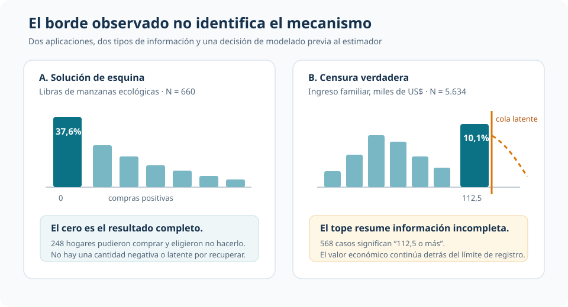
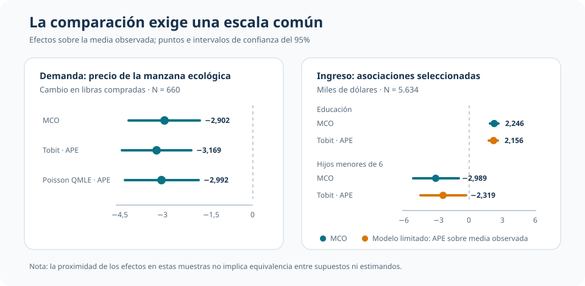

Ceros reales y datos censurados: dos límites observados, dos problemas econométricos
Soluciones de esquina, top-coding y qué cambia al modelar el mecanismo de observación
Una acumulación en el límite no revela por sí sola qué modelo necesita el dato.
Comprar cero manzanas ecológicas es una decisión observada. Registrar un ingreso de 112,5 mil dólares puede significar “112,5 o más”. Estas dos aplicaciones muestran por qué una solución de esquina y una censura verdadera pueden parecerse en el histograma, pero representan problemas econométricos distintos.
Compras de manzanas
660 hogares
La cantidad comprada está observada para toda la muestra
Solución de esquina
37,58% en cero
248 hogares eligieron no comprar manzanas ecológicas
Ingresos familiares
5.634 hogares
La variable se registra en miles de dólares
Top-coding
10,08% en el tope
568 observaciones representan 112,5 mil dólares o más
La pregunta: ¿qué genera el límite observado?
Dos distribuciones pueden exhibir una masa en un borde y, aun así, contener información diferente. En la demanda de manzanas ecológicas, ecolbs = 0 es una realización económica completa: el hogar podía comprar una cantidad positiva y eligió cero. En el ingreso familiar, faminc = 112,5 no identifica el valor verdadero: solo informa que el ingreso alcanzó o superó el límite de registro.
La distinción precede a la elección del estimador. Un modelo no se justifica porque “hay muchos ceros” o porque aparece una barra alta en el máximo; se justifica por el mecanismo económico y de observación que produce ese patrón.

| Pregunta | Solución de esquina | Censura verdadera |
|---|---|---|
| ¿Qué significa el límite? | Una elección económica observada | Una regla de registro incompleta |
| ¿Existe el resultado más allá del límite? | No por debajo de cero | Sí por encima de 112,5 |
| ¿Qué debe explicar el modelo? | Participación y magnitud de una demanda no negativa | La distribución latente y su traducción al dato censurado |
| ¿Qué error conviene evitar? | Tratar los ceros como faltantes | Tratar el top-code como valor exacto |
Aplicación I: una demanda con cero económico
La primera aplicación estudia libras de manzanas ecológicas compradas por 660 hogares. La media es 1,474 libras, pero la mediana es 1 y 248 hogares no compran ninguna. Entre quienes compran, la media sube a 2,361 libras. El cero forma parte del resultado y no debe eliminarse para “normalizar” la muestra.
La especificación relaciona la demanda con el precio de las manzanas ecológicas (ecoprc), el precio de las convencionales (regprc) y características del hogar. La comparación usa tres representaciones de la media observada:
- MCO en la muestra completa, como referencia lineal;
- Tobit tipo I con límite inferior cero, que conecta participación y cantidad mediante un único índice latente;
- Poisson QMLE, usado lateralmente como modelo exponencial de la media condicional, no como modelo de conteo.
MCO estimado solo entre compras positivas responde otra pregunta: describe la cantidad condicional a participar y, por eso, no es una alternativa directamente comparable para la media de toda la población.
Comparar objetos equivalentes
Los coeficientes del índice Tobit y del índice logarítmico Poisson no están en las mismas unidades que el coeficiente de MCO. La comparación correcta utiliza efectos marginales promedio sobre la media observada.
| Covariable | MCO | Tobit: APE sobre media observada | Poisson QMLE: APE sobre media |
|---|---|---|---|
Precio ecológico (ecoprc) |
-2,902 (0,597) | -3,169 (0,581) | -2,992 (0,622) |
Precio convencional (regprc) |
3,033 (0,960) | 3,117 (0,798) | 3,121 (0,979) |
| Ingreso familiar | 0,002 (0,001) | 0,003 (0,001) | 0,002 (0,001) |
| Tamaño del hogar | 0,060 (0,046) | 0,067 (0,044) | 0,061 (0,047) |
Los tres modelos ofrecen una asociación negativa y sustantiva entre el precio ecológico y la demanda media, y una asociación positiva con el precio convencional. La cercanía de los APE no vuelve equivalentes a los modelos: el Tobit impone una distribución latente censurada y un vínculo común entre comprar y cuánto comprar; Poisson QMLE impone una forma funcional para la media.
Aplicación II: una cola que queda oculta
La segunda aplicación usa 5.634 observaciones de ingreso familiar. El máximo registrado es 112,5 mil dólares y concentra 568 casos. Aquí la acumulación no es una decisión económica: cada observación en el tope representa un ingreso latente igual o superior a ese valor.
MCO ignora esa pérdida de información y trata 112,5 como una cifra exacta. El Tobit censurado en el intervalo [0, 112,5] incorpora el soporte observado y reconoce que la cola superior continúa detrás del límite. En la estimación hay 4.739 observaciones no censuradas, 327 en el límite inferior y 568 en el superior; el foco conceptual es el top-coding.
| Asociación con el ingreso familiar observado | MCO | Tobit censurado: APE |
|---|---|---|
| Educación de la esposa | 2,246 (0,202) | 2,156 (0,204) |
| Experiencia | 1,323 (0,156) | 1,229 (0,156) |
| Hijos menores de 6 años | -2,989 (1,045) | -2,319 (1,046) |
| Educación del esposo | 2,841 (0,163) | 2,747 (0,165) |
Las magnitudes están expresadas en miles de dólares. La educación de ambos integrantes se asocia positivamente con el ingreso familiar observado; la presencia de hijos pequeños se asocia negativamente. El Tobit no transforma estas asociaciones en efectos causales: corrige la representación del mecanismo de observación bajo supuestos paramétricos.

Qué aporta —y qué exige— el Tobit
El mismo nombre de estimador aparece en las dos aplicaciones, pero no resuelve el mismo problema.
| Aplicación | Objeto del Tobit | Supuesto fuerte |
|---|---|---|
| Manzanas | Media de una respuesta con esquina en cero | Un único índice latente gobierna participación y magnitud |
| Ingreso | Media observada de una variable latente censurada | La distribución y la regla de censura están correctamente especificadas |
Los errores estándar robustos modifican la inferencia frente a heterocedasticidad, pero no convierten al Tobit en un estimador robusto de la media ni reparan una distribución latente mal especificada. Tampoco basta con que sus predicciones respeten el soporte. El modelo debe sostenerse por el proceso que produjo los datos.
Alcance y límites
- Los resultados son asociaciones condicionales; las aplicaciones no proporcionan por sí solas una estrategia causal.
- La similitud entre APE de MCO, Tobit y Poisson QMLE en manzanas es un resultado empírico de esta muestra, no una equivalencia general.
- La censura es distinta de la selección muestral: aquí se observa a todos los hogares, aunque una parte del resultado quede recortada.
- Si participación y cantidad responden a mecanismos muy diferentes, un único índice Tobit puede ser demasiado restrictivo.
Conclusión
Una masa en cero y una masa en el máximo pueden lucir como variaciones del mismo problema, pero contienen información distinta. En la demanda de manzanas, cero es una elección real que debe permanecer en el resultado. En los ingresos, 112,5 es una etiqueta incompleta para una cola que sigue existiendo.
La lección no es “usar Tobit cuando la variable está limitada”. Es identificar primero por qué aparece el límite, definir el objeto que se quiere interpretar y recién entonces comparar modelos sobre una escala común. La forma del histograma abre la pregunta; el mecanismo económico y de observación decide la respuesta.